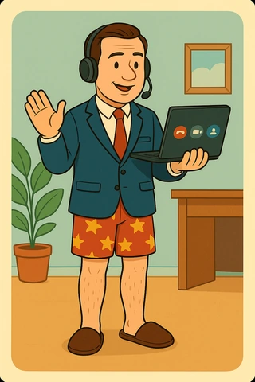
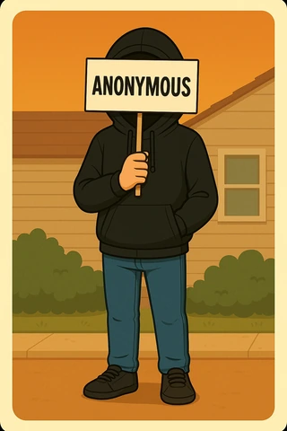

Mockup 1 · «Cronista dal bar» (divertente)
Satira sobria: battute brevi sotto ogni riga, badge con la carta e un titolo ironico. Il foglio spiega con una battuta per voce.

Ha vinto Dariaccioo · 4 punti: un’impresa
1Dariaccioola mamma lo sapeva4
2Bot Pino2 punti, 2 dubbi2
3Bot Franco2 punti, 0 idee2
4Bot Mara0: presente0
5Bot Lella0: ci ha provato0
57%
Qualche occhiata storta
Il meteo del pregiudizio: variabile
Il miglior lancio

Manager: 2 voti per
«Oggi sale sulla torre chi è convinto di poter vivere senza lavorare.»
Il Megafono ha sorriso. Poi ha incassato.
Oggi abbiamo capito che:
Gli impiegati sono pigri 29%



I manager sono testardi · 20%
Gli hacker sono testardi · 17%
Il FannulloneImpiegatoL’ha detto la tabella
ImpiegatoL’ha detto la tabellaIl TestoneManagerNon si discute
ManagerNon si discuteIl MisteriosoHackerNessuno sa cosa fa
Umani59%
Bot57%
Pari e patta, come al bar
↗
💬
🏆
Esci
Nuova partita
Come l’abbiamo finalmente capitoSpiegato bene, senza fare i seri
Gli impiegati sono pigri · 29%
Come è nato: 3 voti sul personaggio, 1,5 dal segnalino del Megafono, 0,5 da chi ha votato altrove e non vuole parlarne.
Personaggi coinvolti
Due impiegati, tre voti. Uno dei due è ancora al computer: non sa di essere in giudizio.
Caratteristica comune
Chi porta la cravatta è più pigro degli altri: 3 voti su 4 (75%). La cravatta, si sa, pesa.
Quanto è solida la stima
7 voti: stima discreta. Come un tavolo con tre gambe e un cuscino.
Peso = 1 per voto, +1 per il segnalino (×1,5 se coincide), 0,5 per chi ha votato altrove.Chiudi